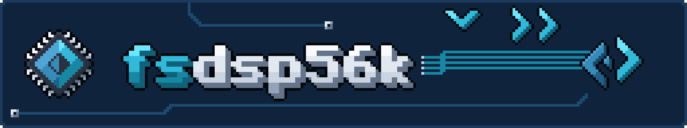
F# tooling for the Motorola DSP56300 family, and on top of it, a workflow for writing Machinedrum machines: MDS packages for X.20, the MDX custom firmware.
Writing a machine for the Machinedrum's DSP usually starts and ends in hand-written assembly: you write it, assemble it with Motorola's asm56300, pack it with the MDS tools, send it over SysEx, and listen. The MDS standard asks you to measure each machine's worst-case cycles before you declare them. That is a long way to go before you hear whether an idea is any good.
fsdsp56k shortens that loop. You can prototype a machine in F# and run it as ordinary code: test it, step through it in a debugger, and save the words it renders as a WAV with one call (Audio.writeWav), with no emulator and no hardware. The prototype runs natively on .NET, and Fable compiles the same functions to JavaScript and to Rust (native or WebAssembly, down to a browser AudioWorklet); we have used both. When the idea is worth it, the same code compiles to DSP56300 assembly, and fsdsp56k allows you to audition and render your kernels, checked word for word against the prototype. Only then do you need to spend effort on hand optimisation and on the real machine.
Some questions, if this kind of DSP work interests you:
- Ready to write 100% hand assembly from day one, or would you rather hear an idea before you count cycles?
- Would you like to know that your optimised version still produces the same words as the version you understood?
- Want to see, line by line, which F# turned into which instruction, and where the cycles go?
- Would a set of real, shipped machines as a regression suite make you braver about changing things?
What you get#
If some of these are yes, this is what fsdsp56k gives you:
- An F# prototype. A machine is a module of three functions (
init,trig,render) over fixed-point types that behave like the DSP's own arithmetic. - A prototype that runs where you work. The same functions run natively on .NET (
Host.Instance), the meaning the compiled program is held to, and through Fable as JavaScript and Rust, checked word for word against it. - Audition, render, grade. The compiled program runs on the DSP56300 emulator with an MDS-style workset; its output and state are compared word for word with the prototype and, for ported machines, with the shipped original. Every call's cycles are measured against the per-track limit.
- An optimiser. The compiler's passes trim reloads and spills, keep hot values in registers and pack parallel moves. On the fixture machines, the compiled code takes about 1.4 to 2.8 times the RENDER cycles of the hand-written originals, with a lot of room to improve.
- MDS packages. The compiled program becomes an MDS package with its relocations and imports. For hand-written machines, the command line assembles, checks against the dsp56300 oracle, packs, converts to and from SysEx, disassembles, and renders with a WAV and a cycle report.
- A real test suite. All eight drums of kitbasher's TX6 kit and Justin Mammarella's four MDS examples are ported and graded on every test run, each identical, word for word, to the machine it was ported from.
Assembly as F##
You can also skip the kernel layer and write the assembly yourself, in F#. Plain assembly shares code through include, equ, define and conditional assembly, and it does that well: in the MDS sample-playback examples, four machines are each a few equ lines over one shared sample_player.inc. The DSL writes DSP56300 programs as F# arrays of instructions, so the same ideas become ordinary F#: a routine is a function of its labels, offsets and counts, a for loop unrolls it, and an if chooses its shape when the program is built.
open dsp56k.dsl
open dsp56k.dsl.Asm
/// Clear `count` Y words from (r6+first): unrolled when short, a DO loop when long.
let clearY name first count = [|
label name
clr a
if count <= 4 then
for i in 0 .. count - 1 do
move a (ym (disp r6 (first + i)))
else
move r6 r0
move (imm first) n0
update (incN r0)
doTo (imm count) $"{name}_end"
move a (ym (inc r0))
label $"{name}_end"
rts |]
let program = Array.concat [ clearY "INIT" 9 19; clearY "TRIG" 12 3 ]
let listing = Program.source program // INIT as a DO loop, TRIG as three moves
let words = Program.words program // 13 P wordsThe assembler, disassembler and emulator work on any DSP56300 code, whether it was written this way or by hand.
Getting started#
You need the .NET SDK and a Rust toolchain: native/ builds the DSP56300 oracle and emulator.
$ git clone https://github.com/smoothdeveloper/fsdsp56k
$ cd fsdsp56k
$ dotnet tool restore && dotnet paket install
$ (cd native && cargo build --release) # oracle, emulator, import, runThen render a kernel to a WAV, with its cycle report:
$ dotnet run --project src/dsp56k.tool -- run tests/dsp56k.tests/Kernels/Sine.fs --wav sine.wavAnd the tests, which grade every fixture machine (fetch the shipped machines they compare against first, with scripts/fetch-fixtures):
$ dotnet run --project tests/dsp56k.testsdotnet tool install) once it is published.Commands#
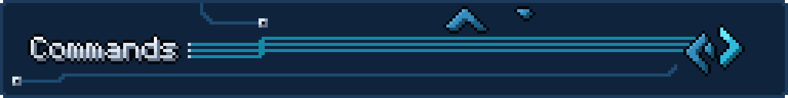
DSP56300 commands work on any code for the chip; a host's commands live under its name (today the Machinedrum: machinedrum, or md). run, stress and audition take a machine for a host (--host, default machinedrum): an MDS package or SysEx dump, or an F# kernel as a project, a script or one file (--kernel picks one when it defines several). fsdsp56k <command> --help lists every flag.
| Command | What it does | |
|---|---|---|
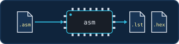 | asm | Assemble a Motorola-syntax source to a listing and P-memory hex. |
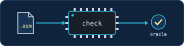 | check | Assemble, then confirm every instruction against the dsp56300 oracle. |
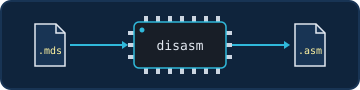 | disasm | Recover a package's program (from a .mds or .syx) as Motorola-syntax source. |
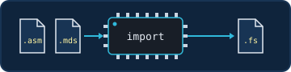 | import | Turn a listing or a package into F# DSL source. |
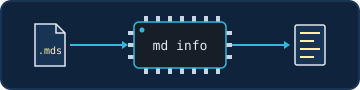 | machinedrum info | Show a package's header, parameters, patches and checks. |
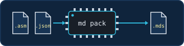 | machinedrum pack | Assemble a program and pack it with its MDS definition (and an optional sprite). |
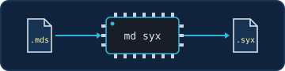 | machinedrum syx | Turn a package into a SysEx dump for a slot. |
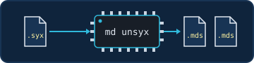 | machinedrum unsyx | Split a SysEx dump back into packages. |
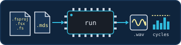 | run | Render a machine: a 24-bit WAV, per-call cycles against the limit, and --profile hot spots. |
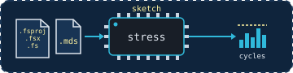 | stresssketch | Sweep the parameters or search for the worst case, and report the worst INIT, TRIG and RENDER cycles with the settings that cause them. |
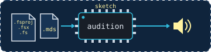 | auditionsketch | Play a machine live through the sound card, retriggered with --trig-every. |
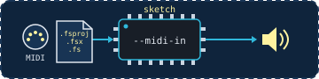 | audition --midi-insketch | Trigger it and turn its parameters from a MIDI controller; --midi-out mirrors it to a real Machinedrum or other gear. |
asm
Assemble a Motorola-syntax source to a listing and P-memory hex, with asm56300's sizing rule and its include, define, macro and if.
fsdsp56k asm src.asm [-I dir] [-D NAME=VALUE] [-l out.lst] [--hex out.hex]Options
Workflows
asm56300's.check
Assemble, then confirm every instruction against the dsp56300 oracle: the encoding and the printed text must agree.
fsdsp56k check src.asm [-I dir] [-D NAME=VALUE]Options
Workflows
check before packing a hand-written machine.disasm
Recover a package's program, from a .mds or a .syx, as Motorola-syntax source with labels, entry points and patch markers.
fsdsp56k disasm machine.mds|machine.syx [--slot n]Options
Workflows
asm.import
Turn a listing or a package into F# DSL source, ready to parameterise and share between machines.
fsdsp56k import src.asm|machine.mds|machine.syx [-m Module] [-o out.fs]Options
Workflows
machinedrum info
Show a package's header, parameters, patches and checks. md is short for machinedrum.
fsdsp56k md info machine.mdsOptions
Workflows
machinedrum pack
Assemble a program and pack it with its MDS definition, the same one mds_pack.py reads, and an optional sprite.
fsdsp56k md pack …Options
Workflows
machinedrum syx
Turn a package into a SysEx dump for a slot.
fsdsp56k md syx machine.mds …Options
Workflows
machinedrum unsyx
Split a SysEx dump back into packages.
fsdsp56k md unsyx dump.syx …Options
Workflows
syx and unsyx.run
Render a machine: a 24-bit WAV, per-call cycles against the limit, and --profile hot spots. Takes an MDS package or SysEx dump, or an F# kernel as a project, a script or one file.
fsdsp56k run machine.mds|machine.syx|Kernel.fs [--host machinedrum] [--kernel name]
[--settings 64,1,…] [--blocks n] [--trig-every n] [--sample in.wav]
[--wav out.wav] [--profile]Options
Workflows
--profile; feeding a sample with --sample.stress sketch
Sweep the parameters (--sweep exhaustive, random:N) or search for the worst case (--search anneal:N), and report the worst INIT, TRIG and RENDER cycles with the settings that cause them; --audition plays each case as it goes.
fsdsp56k stress Kernel.fs [--sweep exhaustive|random:N] [--search anneal:N] [--audition]Options
Workflows
audition sketch
Play a machine live through the sound card, retriggered with --trig-every.
fsdsp56k audition Kernel.fs [--trig-every n]Options
Workflows
audition --midi-in sketch
Trigger it and turn its parameters from a MIDI controller, in the Machinedrum's default map; --midi-out mirrors it to a real Machinedrum or other gear.
fsdsp56k audition Kernel.fs --midi-in <port> [--midi-out <port>]Options
Workflows
Kernels#
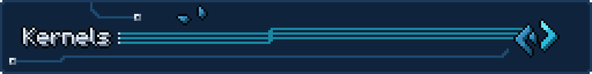
A kernel is a Machinedrum machine written as ordinary F# over fixed-point types (Frac, Acc, Long). The same code runs as a prototype, to hear and test it, and compiled to DSP56300 code that the Machinedrum runs. The grade checks that both give the same words.
From F# to a running machine#
- Source. You write a module with a parameter record, a state record and three functions.
- Front end. The F# compiler reads the three functions from the source text, and the front end turns them into the compiler's own tree, the
IrKernel. - Code generator and optimiser. The generator turns the tree into DSP56300 items. The optimiser passes then shorten it (fewer reloads and spills, registers for hot locals, parallel moves). A kernel too big for an MDS package is refused.
- Assembly and package. The items assemble to P words with three entry symbols,
INIT,TRIGandRENDER, and are packed as an MDS package with the machine's name and controls. - Audition and grade. fsdsp56k allows you to audition and render your kernels on the DSP56300 emulator, with an MDS-style workset. The grade runs a scenario there, runs the same F# prototype on .NET, and compares output and state word for word, and against the shipped machine when there is one.
The prototype beyond .NET#
The kernel functions are plain F#, so Fable can compile them too. portable/ builds the same init, trig and render with Fable to JavaScript and, with Fable's Rust backend, to Rust as WebAssembly and as a native library, and checks each one's output and state after every block against the .NET run, the run the emulator is graded against. SINE, PLUCK and INPUT-THRU pass on every target; the suite is opt-in and not part of the default test run. wasm/ plays the Rust/WebAssembly build in a browser AudioWorklet.
What a kernel declares#
| Part | In the F# | On the Machinedrum |
|---|---|---|
| Entry points | init, trig and render, three functions of the kernel's module | INIT to set up, TRIG on each trig, RENDER once per 32-frame block |
| Parameters | a record of up to 8 Frac fields | Y:(r6+1) to Y:(r6+8), written by the host from the controls |
| Controls | not in the kernel: the machine definition names them (PTCH, AMP) | the front-panel knobs, 0 to 127, converted to the parameter words |
| State | a record of Frac, Long, Acc and [<Length n>] Frac array fields; [<XMemory>] puts a field in X | Y:(r6+9) on; X fields from X:(r6+0) |
| Output | out.Write in render | 32 mono words at Y:(r7)+ |
| Host | not in the kernel: Kernel.hosts (today the Machinedrum) | where the words above sit and how the routines are called |
Host, track t
calls INIT, TRIG, RENDER with r6 = the track's workset
The workset · 64 words, r6-relative
RENDER writes
32 output words at Y:(r7)+
Each track's workset is 64-word aligned on the Machinedrum. That is why a ring over state (modulo addressing) is allowed there.
A minimal kernel#
The sine generator from Justin Mammarella's MDS examples, from tests/dsp56k.tests/Kernels/Sine.fs:
module samples.kernels.Sine
open dsp56k.kernel
open dsp56k.kernel.Units
type Params =
{ pitch : Frac<Hz> // the host's pitch increment
amp : Frac<ratio> } // unsigned Q23
type State =
{ mutable phase : Long // Y+9..10: table index . fraction
mutable ampPrev : Frac } // Y+11: the amplitude the last block ended on
let init (_: Params) (s: State) =
s.phase <- Long.zero
s.ampPrev <- Frac.one
let trig (_: Params) (s: State) =
s.phase <- Long.zero
let render (p: Params) (s: State) (out: Output) =
let step = Acc.ofFrac (plain p.pitch) >>> 6 // P / 64 table words per frame
let ramp = (Acc.ofFrac (plain p.amp) - Acc.ofFrac s.ampPrev) >>> 5 // the gain reaches AMP over the block
let mutable gain = Acc.ofFrac s.ampPrev
let mutable phase = Acc.ofLong s.phase
for _ in 0 .. 31 do
gain <- gain + ramp
let v = Table.read Rom.sine (Acc.hi phase)
out.Write(Acc.sat ((v * Acc.hi gain) >>> 2))
phase <- Acc.andHi 0x7fff (phase + step)
s.phase <- Long.ofAcc phase
s.ampPrev <- plain p.ampWhat kernels can use#
- Arithmetic:
Frac,AccandLongwith the DSP's own rounding and saturation, MPYR/MACR, and an LFSR step. Each operation has an F# meaning that the tests check against the emulator. - State:
Frac,Long(two words),Acc(three words, exact) and fixed-lengthFracarrays, indexed by a constant, the loop index (s.h[i + 1]), or a run-time word (s.h[Frac.index k]). In the prototype an index outside the array fails; on the DSP it reaches another word. - Cursors: an address register walking a state array or a region, linear (
Cursor.linearIn s.h start step) or as a ring (Cursor.ringIn, modulo addressing). A ring must start on a multiple of the power of two at or above its length; the compiler says so otherwise. - The Machinedrum's resources: the sine table, the input and main-output rings and their position words, the shared temporary memory, and tables placed in program memory.
- Helpers: ordinary functions, inlined, which may take the parameter and state records. Where argument effects could interact they run left to right, as in the prototype.
[<Subroutine>]makes one a called routine instead.
A voice record read when compiling picks the code: the TX6 toms and hats are one engine each, and LT's glide (if voice.glide) or CY's bell layer (match voice.layer with ...) is decided at compile time, so each kernel holds only its own code.
The fixture machines#
The TX6 kit's eight drums, by Matthew Fecher (AnalogMatthew) and Fadedlimes, published under the MIT licence in etcetc000/kitbasher, are the most comprehensive suite of real machines the compiler is held to: glides, layered metal, noise and tables, each reproduced word for word. They are what made the compiler robust; many thanks to their authors.
tests/dsp56k.tests/Kernels ports twelve machines: Justin Mammarella's four MDS examples and all eight drums of kitbasher's TX6 kit (BD, LT, HT, CH, OH, CY, SD, CP, in five kernel files). The tests grade each against the machine it was ported from:
| Kernel | Ported from | RENDER cycles |
|---|---|---|
Sine.fs | jmamma/MDS examples/sine | ×2.78 |
InputThru.fs | jmamma/MDS examples/imports/input_thru | ×1.43 |
MainTap.fs | jmamma/MDS examples/imports/main_tap | ×1.77 |
Pluck.fs | jmamma/MDS examples/imports/pluck | ×1.55 |
Tx6Bd.fs | kitbasher mds/tx6/bd (MIT) | ×2.11 |
Tx6Tom.fs (LT, HT) | kitbasher mds/tx6/lt, ht (MIT) | ×2.05, ×2.07 |
Tx6Metal.fs (CH, OH, CY) | kitbasher mds/tx6/ch, oh, cy (MIT) | ×2.03 each |
Tx6Sd.fs | kitbasher mds/tx6/sd (MIT) | ×1.84 |
Tx6Cp.fs | kitbasher mds/tx6/cp (MIT) | ×1.95 |
Each is word for word identical to the shipped machine on the emulator, and to the same F# run as .NET code.
What a grade writes#
Everything goes under out/kernels/ (untracked, and cleared by the run that regenerates it):
report.html: per kernel, the verdicts, the output against the reference (SVG), the cycles of every call against the track limit, the costs, and three listings side by side: the F#, the generated assembly (hovering a line highlights the F# it came from) and the ported source, each entry point aligned with the reference's disassembly.- One folder per machine, grouped by origin (
kitbasher/tx6/bd/,jmamma-mds/examples/sine/, …): the compiled kernel's and the reference's output as WAV, the scenario script, an Audacity label track (File > Import > Labels…) and the compiled listing. The tests keep theirs inout/kernels/tests/.
A scenario plays two bars at 120 BPM as a sequencer would (trigs, parameter locks), then sweeps each control from its default and covers every pair of controls at low, default and high values.
Layers#
The DSP56300 libraries know nothing about the Machinedrum; the Machinedrum libraries build on them; the kernel compiler, the samples and the command-line tool sit on top.
| Path | What it is |
|---|---|
| Pure DSP56300 | |
src/dsp56k | Typed ISA, encoder, Motorola-syntax printer and parser, two-pass assembler (include, define, macro, if) with asm56300's sizing rule |
src/dsp56k.dsl | The F# DSL: instruction helpers, workset layouts, table generation, optional lowering passes (parallel-move packing, AGU hazards), listing import |
src/dsp56k.native, native | The oracle assembler and disassembler and the JIT emulator, over mborgerson/dsp56300 (MIT) |
| Machinedrum MDS | |
src/machinedrum | MDS v1 packages (definitions, byte-exact writer, reader, verification), the machine ABI as DSL helpers, SysEx dumps |
src/machinedrum.run | Runs a package on the DSP56300 emulator with an MDS-style workset: loader relocation and imports, parameter conversion, cycle budgets, WAV I/O |
| Kernels in F# | |
src/dsp56k.kernel.intrinsics | Frac, Acc, Long, Table, Output: DSP56300 arithmetic as .NET code |
src/dsp56k.kernel, src/dsp56k.kernel.typedtree | The compiler: the front end over the F# compiler's typed tree, the IR, the code generator and the optimiser; a .NET host running the same kernel |
src/dsp56k.kernel.grade | Runs a scenario three ways (.NET kernel, compiled program, reference) and reports correctness, fidelity, cost and listing alignment |
portable | Opt-in direct F# execution: .NET, Fable JavaScript, Fable Rust/WASM; exact sample checks and render timing |
| On top | |
src/dsp56k.tool | The fsdsp56k command line |
tests/dsp56k.tests | Expecto tests |
dsp56k.audio, the samples folder, the host modules).The DSL#
A program is an array of items written with F# functions, so loops, tables and variants are ordinary F# code:
open dsp56k.dsl
open dsp56k.dsl.Asm
let clearWorkset = [|
label "init"
move r6 r0
move (imm 9) n0
update (incN r0)
clr a
doTo (imm 19) "init_end"
move a (ym (inc r0))
label "init_end"
rts |]
let words = Program.words clearWorkset // assembled with the same encoder as listings
let listing = Program.source clearWorkset // Motorola syntax, for asm56300 or reviewCredits#
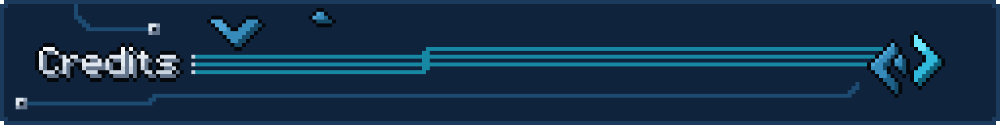
fsdsp56k stands on other people's work, and we are grateful for all of it.
- MotorolaThe house of the 68000, for the DSP56000 family (1986), designed to stay close enough to Motorola's microprocessors to be easy to learn, and its DSP56300 generation; and for
asm56300and its CLD/LOD tooling, whose dialect and sizing rules our assembler follows. The line passed to Freescale in 2004 and to NXP in 2015, whose Symphony Studio still supports DSP56300 development. - ElektronFor the Machinedrum and its original firmware. MDS follows that firmware's machine design, and MDX extends it by patching, which is what lets a Machinedrum run MDS machines today.
- Justin Mammarella and Yatao LiFor MDX, the custom Machinedrum firmware. X.20, its 2.0 preview, adds user machines.
- Justin MammarellaFor MDS: the machine standard, its tools and its example machines.
fsdsp56k machinedrum packreads the same definitions asmds_pack.py, and four of the examples are part of our test suite. - The Usual SuspectsFor dsp56300 (GPL-3.0), their DSP56300 emulator, public since 2021 and grown from code first written in 2011. Years of patient work went into it. The optional WebAssembly build compiles their dsp56300 interpreter for playback in the browser. dsp56300.com
- Matt BorgersonFor dsp56300 (MIT), a separate DSP56300 toolkit in Rust: an assembler, a disassembler and a JIT emulator, which also runs the DSP cores of the original Xbox's audio processor in xemu, and is checked against real hardware. fsdsp56k uses it natively as the instruction oracle, as the assembler and disassembler its own are checked against, and as the emulator behind
run,stress,auditionand every grade. - The TX6 authorsMatthew Fecher (AnalogMatthew) and Fadedlimes, for the TX6 drum kit in kitbasher. Its DSP sources are MIT-licensed, and all eight drums are ported and graded here.
Licence#
fsdsp56k is free software under the GNU Affero General Public License, version 3 or (at your option) any later version (AGPL-3.0-or-later); the full text is in LICENSE. The crates in native/ and portable/ carry the same licence. The ported machines credit their authors and keep their terms (THIRD-PARTY-NOTICES.md); dependencies keep theirs (mborgerson/dsp56300: MIT; the dsp56300 interpreter the WebAssembly build compiles: GPL-3.0, not in this repository).
An independent project, not affiliated with or endorsed by Elektron. Machinedrum is a trademark of its owner. · Home · Top ↑